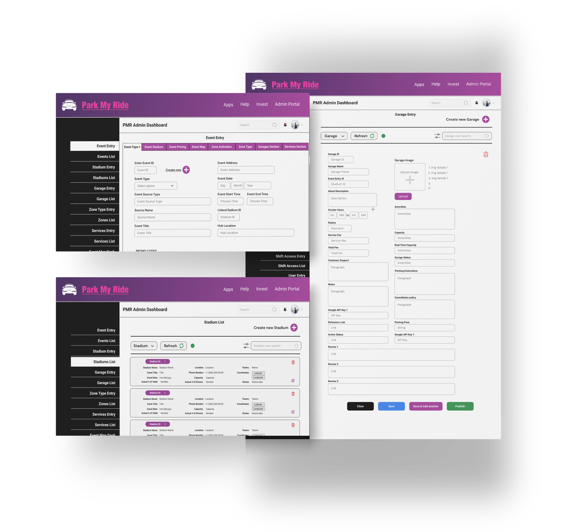
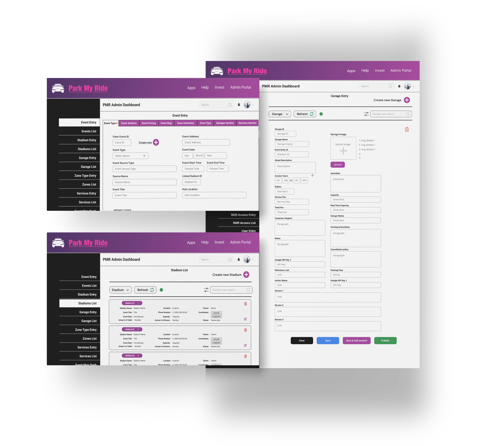

3-sided Valet parking System Design
Designing a Valet Parking Ecosystem for Real-Time Coordination at Scale
Customer App - Dashboard - Driver App
![[Alt Text]](img/PMR_Mob_Prototype.png)
Project Overview
As a UX designer & a Scrum Master for the project, I worked with the product owner, developer team and the team of designers in building 3 mobile prototypes, 2 desktop prototypes and successfully setting up the User acceptance testing. I've also conducted the Scrum ceremonies for the sprints to efficiently track the progress of the project and ensure incremental product delivery.
Challenge
Event attendees often struggle to find convenient, real-time parking assistance. Organizers, in turn, face logistical headaches coordinating multiple parking venues, attendants, and last-minute changes. PMR aims to simplify this by creating a seamless, multi-channel experience that serves both event-goers and organizers.
Goals
• Enable attendees to book & manage valet parking with ease.
• Help admin manage parking zones and attendants in real time.
• Provide attendants with intuitive tools for on-demand pick-up & drop-off.
Impact
43 Sec ↓
Avg. Booking Time
93% ↑
Task Success Rate
60% ↓
Drop in "Parking Panic"
User Research

- 5 Contextual interviews (3 attendees, 2 event Organizers)
- Online Survey (82 responses)
- Competitive analysis (3 Companies)
Key Research Takeaways
70% of users find parking to be the most stressful part of attending large events. Event organizers waste 15-20% of parking capacity due to poor coordination Attendants struggle with slow check-in flows and no-show identification
User Journey Mapping
With the personas in place, I mapped out the attendee journey from searching for parking to attending the event, to pinpoint specific pain points & design opportunities.

Defining the right questions:
Based on the User Journeys, I reframed the challenges into..
- How can we make the event parking feel effortless?
- How can we make the user feel confident in handing over the vehicle to the valet?
- How can we make the transaction feel secure?
Prioritized features using a MoSCoW matrix, making sure the MVP focused on must-haves like Attendee, Valet and Driver Profiles, Pick-up & Drop-off flows, Real-time status update features etc..

Mobile Prototype
I started prototyping the application using the Lo-fi sketches as foundation. The sketches provided a basic idea of the requirements for each screen, connecting multiple tasks together seamlessly.


Some of the sample sketches used as reference in prototyping.
Wireframes help brainstorm and resolve the user flows derived from the scenarios drawn from the Persona and user journey mapping. Below is an early stage flow of interactions starting from the homepage to accomplish profile creation, Pick-up & Drop-off booking and advance booking flows.

Usability Testing & Iterations
Ran unmoderated tests using Maze with 6 users
findings
- 90% completed booking in under 45s
- Real-time valet/driver status was preferred on homepage
- Users wanted a confirmation before handing over the vehicle
- 65% users struggled with contrast on confirmed pick-up/drop-off button
Hi-fi Prototype
Incorporating the necessary changes based on the findings from the usability testing, a hi-fi prototype is created on Figma for Customer experience, Driver/Valet experience, the Dashboard and the smartwatch interfaces.
Microinteractions
Microinteractions to confirm task completion, error identification, activity status etc. are designed to allow users to complete tasks with confidence improving user experience.


Some microinteraction snippets from the prototyping.
The Dashboard
The operational dashboard for the application allows user to create events, garages, stadiums etc. as required along with the ability to update and track the status of the activities in real-time. The dashboard works in synchronization with the Customer and Valet app.
I built the dashboard prototype and also building it ground up on WordPress with custom html, css, JavaScript and implementing API calls for all the datasets in the dashboard.
The following are some of the screens designed in collaboration with the database engineers and the product owner based on the foundational sketches and the Django database requirements.
 

A/B Testing
To compare the effectiveness and user engagement of two data presentation formats (Option 1 and Option 2) in terms of clarity, user readability, and ease of data interpretation.
Option 1
Option 2
Findings
Usability testing revealed that Option A consistently outperformed Option B across all key metrics. Users completed tasks faster, made fewer errors, and rated the interface as more intuitive and visually appealing. Engagement and satisfaction were significantly higher with Option A, and reduced scrolling behavior indicated better information accessibility. Overall, 85% of users preferred Option A, citing its clarity, organization, and ease of use.

Reflections
This project made me realise the impact a design system can have on the development process. A defined design system enables reduces the friction between design and development team. Having a working knowledge of the development tools allows designers to make most efficient decisions and prioritize the tasks.